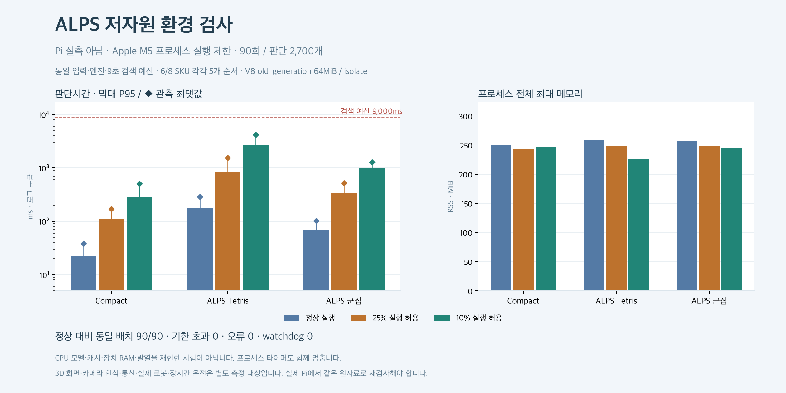
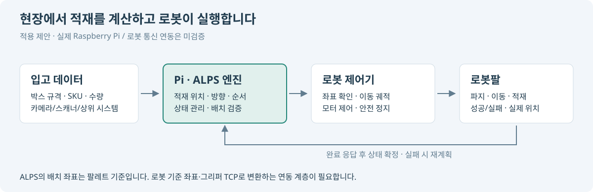

ALPS 저자원 환경 검사
라즈베리 파이 실측이 아닙니다. Apple M5에서 프로세스 실행 기회를 줄인 배치 엔진 파일럿입니다. CPU 종류·캐시·발열·전원·OS·장치 RAM은 Pi와 다릅니다.
90회 · 판단 2,700개 · 각 SKU 조건의 고정 입고 순서 5개 · 기존 엔진/9초 검색 예산 유지

엣지 컴퓨팅으로 적용한다면

현장의 Pi가 적재 위치·방향·순서를 계산하고, 로봇 제어기가 이동과 모터 제어·안전 정지를 수행하는 구조입니다. 현장 Mac의 로컬 실행도 엣지에 해당하며, Pi는 소형·저가 장치로 배포하기 위한 선택입니다. 현재는 적용 제안이며 실제 Pi·로봇 연동 검사는 하지 않았습니다. 엣지 컴퓨팅 설명 · 공식 외부 통신 예시: UR RTDE
ALPS의 팔레트 기준 좌표를 로봇·그리퍼 기준으로 변환하고, 실제 도달성·충돌·파지를 확인하는 연동 계층이 필요합니다. 실행 완료를 확인한 뒤에 실제 적재 상태를 갱신합니다. 배치 판단에는 외부 Claude/API가 필요하지 않습니다.
신규 계산 장치 구매비: 약 78~82% 절감 가능
Mac mini 시작 가격 1,499,000원을 비교 기준으로 삼았습니다. 현재 시험 Mac의 실제 구입가격과는 다릅니다. 2026-10-10 확인 · Pi 키트 VAT 포함 · 전체 로봇 설비 원가 절감률이 아닙니다.
엘레파츠 구성 안내: 보드·쿨러·케이스·27W 전원·microSD·케이블 등. 키트 간 구성은 다를 수 있습니다. 산업용 I/O·함체·연동·설치·유지보수는 별도이며, 보유 Mac을 계속 사용하는 경우 위 신규 구입비 절감을 적용할 수 없습니다.
비용 효율 판단: 실제 Pi에서도 적재 품질과 기한 내 실처리량이 같다면 구입비당 처리량은 산술적으로 4.54~5.68배가 됩니다. 이 값은 조건부 계산이며 Pi 성능 실측 결과가 아닙니다. 전력·공장 생산량·API 비용 절감은 아직 측정하지 않았습니다.
계산시간과 프로세스 메모리
| 실행 조건 | 정책 | P95 ms | 최대 ms | 최대 RSS MiB | 기한 초과 |
|---|
| 정상 실행 | Compact | 22.5 | 38.4 | 250.1 | 0 |
|---|
| 정상 실행 | ALPS Tetris | 179.5 | 288.4 | 259.0 | 0 |
|---|
| 정상 실행 | ALPS 군집 | 68.8 | 101.8 | 256.9 | 0 |
|---|
| 25% 실행 허용 | Compact | 112.8 | 170.0 | 243.1 | 0 |
|---|
| 25% 실행 허용 | ALPS Tetris | 850.5 | 1538.2 | 248.1 | 0 |
|---|
| 25% 실행 허용 | ALPS 군집 | 337.0 | 520.3 | 248.2 | 0 |
|---|
| 10% 실행 허용 | Compact | 280.0 | 502.9 | 246.5 | 0 |
|---|
| 10% 실행 허용 | ALPS Tetris | 2631.5 | 4192.6 | 226.7 | 0 |
|---|
| 10% 실행 허용 | ALPS 군집 | 989.4 | 1278.1 | 245.9 | 0 |
|---|
정상 대비 동일 배치 90/90 · 기존 원자료와 동일 배치 90/90 · 오류 0 · watchdog 0. 이 비율은 검사한 5개 입고 순서의 결과입니다.
V8 old-generation은 isolate별 64MiB로 제한했습니다. 프로세스 전체 메모리나 장치 RAM 제한과는 다릅니다. CPU 제어는 50ms 주기이며 플래너와 supervisor 타이머를 함께 멈춥니다. 3D 화면·카메라 인식·실제 로봇·장시간 온도/전원은 포함하지 않았습니다.
장비 채택 판단: 실제 Pi에서 같은 입력을 실행하고, 인식·통신을 함께 켠 상태의 기한 준수와 발열 후 성능을 확인해야 합니다. 공식 Pi 5 사양·냉각·전원 안내